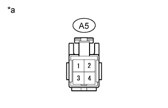
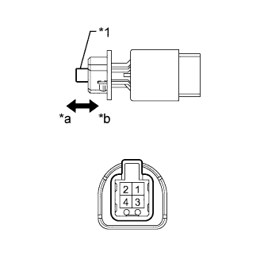

DTC P0571 Stop Light Switch Circuit Malfunction |
| DTC Code | DTC Detection Condition | Trouble Area |
| P0571 | The voltages of terminals ST1- and STP of the ECM are both below 1 V for 0.5 seconds or more. |
|
| This trouble code is stored when the skid control ECU detects a malfunction in the stop light control relay circuit for 1 second while the dynamic radar cruise control is operating. |
|
| 1.READ VALUE USING INTELLIGENT TESTER (STOP LIGHT SWITCH ASSEMBLY) |
Use the Data List to check if the stop light switch is functioning properly (Click here).
| Tester Display | Measurement Item/Range | Normal Condition | Diagnostic Note |
| Stp Light SW M-CPU | Stop light switch (Main CPU) signal / OFF or ON | OFF: Brake pedal released ON: Brake pedal depressed | - |
|
| ||||
| OK | |
| 2.CHECK FOR DTC (VEHICLE STABILITY CONTROL SYSTEM) |
Check for DTCs (Click here).
|
| ||||
| OK | |
| 3.CHECK FOR DTC |
Clear the DTCs (Click here).
Perform the following to make sure the DTC detection conditions are met.
Drive the vehicle at a speed of 50 km/h (30 mph) or more.
Turn the cruise control switch on.
Push the cruise control switch to -SET to activate cruise control.
Check for DTCs (Click here).
|
| ||||
| OK | ||
| ||
| 4.CHECK HARNESS AND CONNECTOR (STOP LIGHT SWITCH - BATTERY) |
|  |
Disconnect the A5 stop light switch connector.
Measure the voltage according to the value(s) in the table below.
| Tester Connection | Condition | Specified Condition |
| A5-2 - Body ground | Always | 11 to 14 V |
| A5-4 - Body ground | Engine switch on (IG) | 11 to 14 V |
| A5-4 - Body ground | Engine switch off | Below 1 V |
| *a | Front view of wire harness connector (to Stop Light Switch Assembly) |
|
| ||||
| OK | |
| 5.INSPECT STOP LIGHT SWITCH ASSEMBLY |
|  |
Remove the stop light switch (Click here).
Measure the resistance according to the value(s) in the table below.
| Tester Connection | Switch Condition | Specified Condition |
| 1 - 2 | Not pushed | Below 8.3 Ω |
| 1 - 2 | Pushed | 10 kΩ or higher |
| 3 - 4 | Pushed | Below 1.6 Ω |
| 3 - 4 | Not pushed | 10 kΩ or higher |
| *1 | Pin |
| *a | Not Pushed |
| *b | Pushed |
|
| ||||
| OK | |
| 6.CHECK HARNESS AND CONNECTOR (STOP LIGHT SWITCH - ECM) |
Disconnect the A5 stop light switch connector.
Disconnect the G44 and G45 ECM connectors.
Measure the resistance according to the value(s) in the table below.
| Tester Connection | Condition | Specified Condition |
| A5-3 - G44-8 (ST1-) | Always | Below 1 Ω |
| A5-1 - G45-18 (STP) | Always | Below 1 Ω |
| A5-3 - Body ground | Always | 10 kΩ or higher |
| A5-1 - Body ground | Always | 10 kΩ or higher |
|
| ||||
| OK | ||
| ||